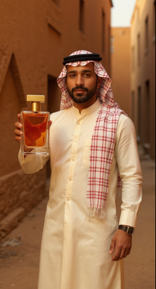
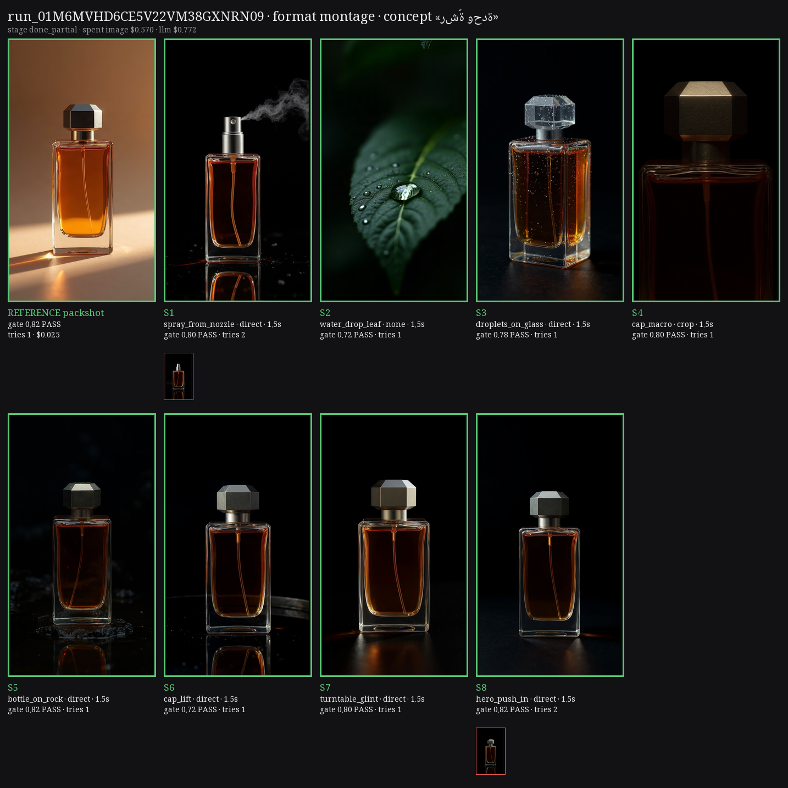

1 · Critic calibration
The vision critic needed three tries
v1Too lenient: a clip with 2 major issues passed at 0.72.
v2Too strict: 10 of 10 keyframes rejected for staging details.
nowHard / soft split, decided by code. Identity, stray text, brand safety and alcohol look fail a shot; light side and composition only lower the score.
12 / 14 stored keyframes re-judged correctly
2 · The kurta lesson
A Saudi thobe drifted into a kurta

bible: "mandarin collar, visible button placket" → South Asian kurta
lint now repairs it: white Saudi thobe, stiff collar, concealed placket
3 · Keyframe gate
Judge the still before paying for video
21 keyframes stopped before animation
≈ $5.60 of Kling saved in the first full run

Montage v2: red thumbnails = stills the gate rejected (spray with the cap on, hero with a reflection).